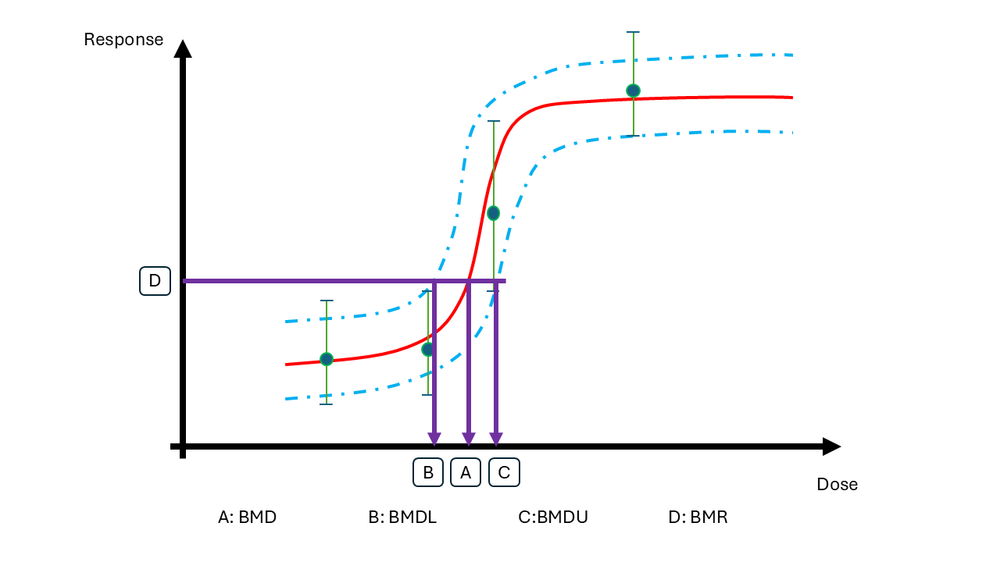
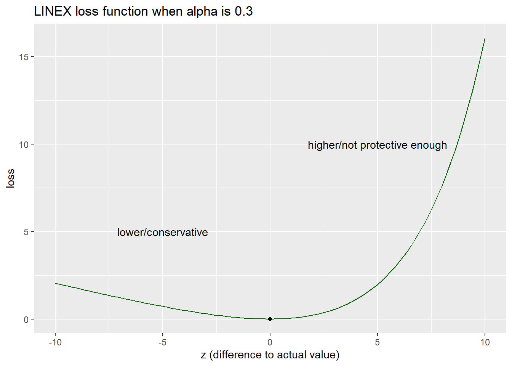
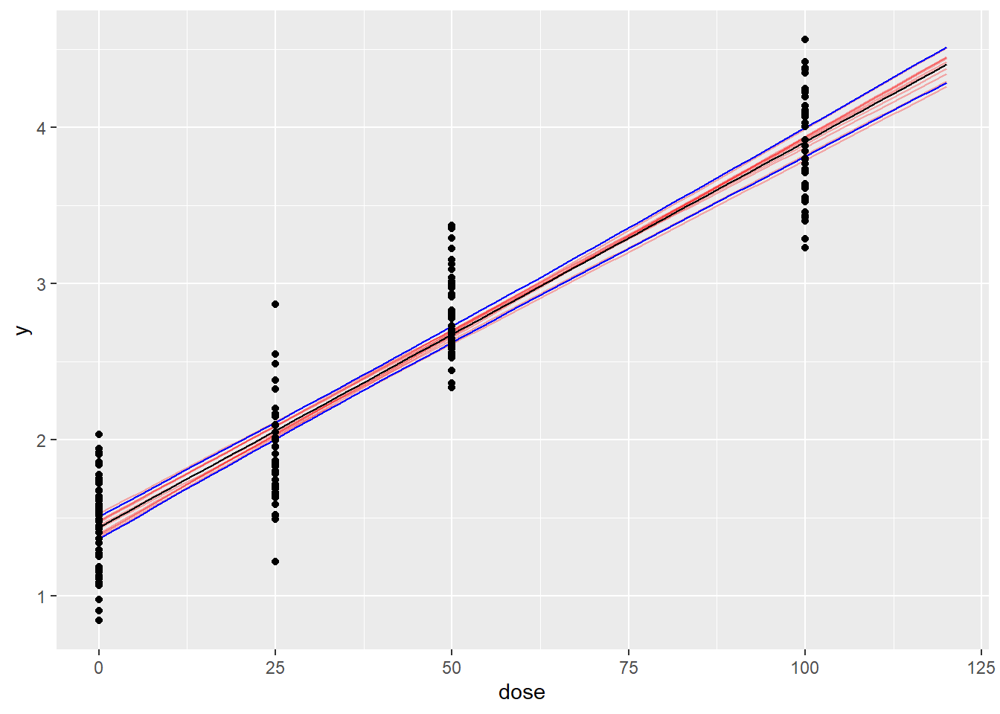
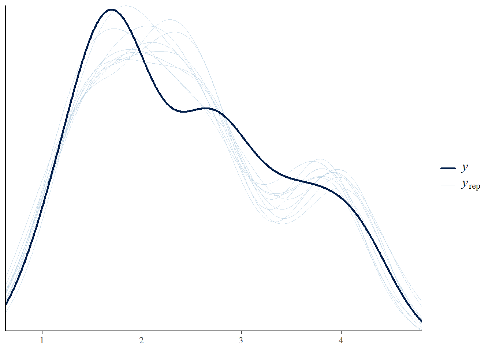
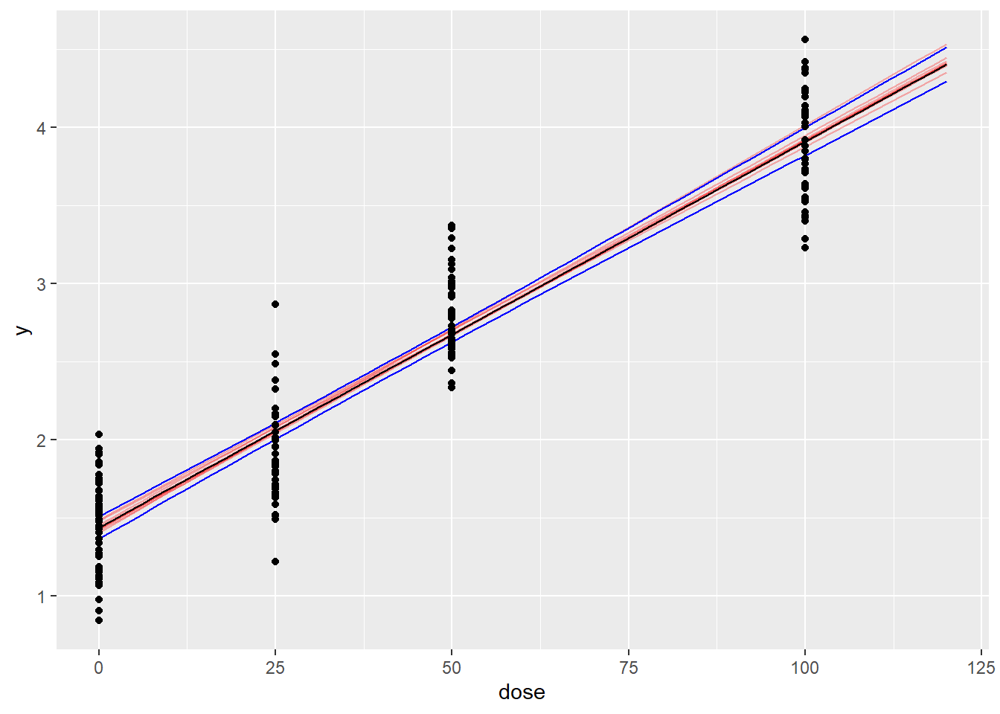
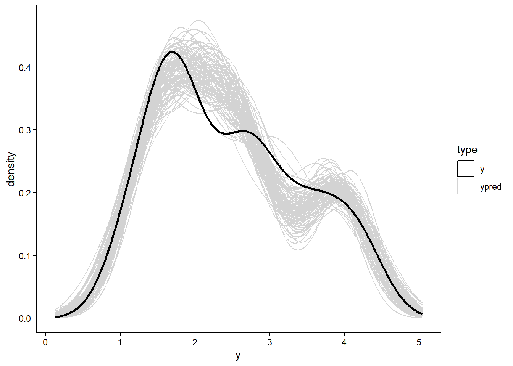
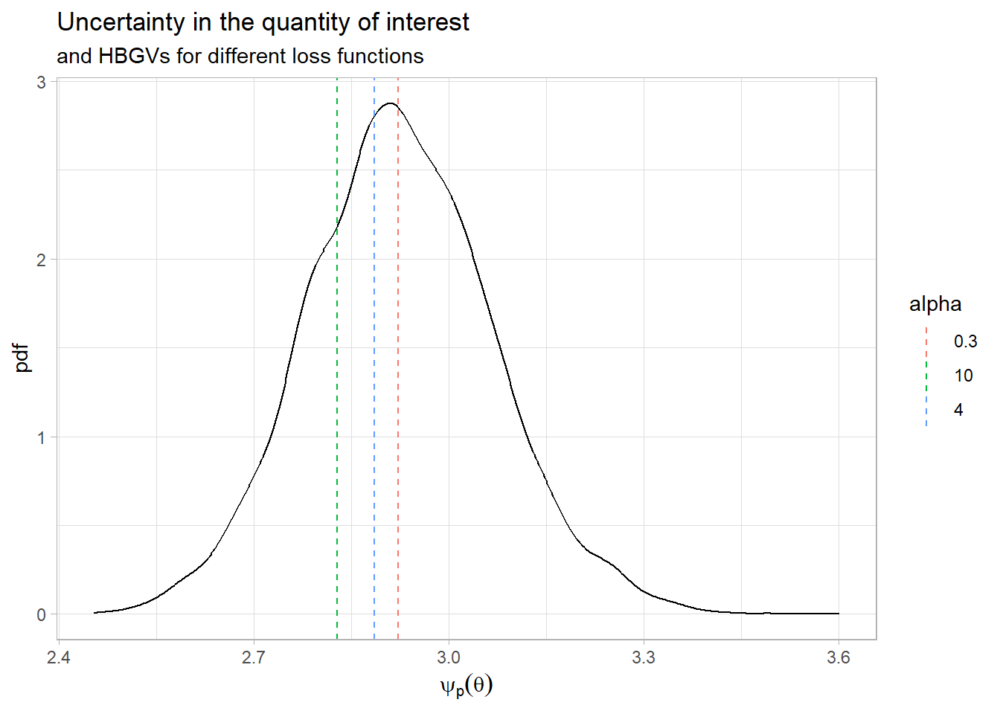

library(ggplot2)Bayesian data and decision analysis
Case study on finding a highest acceptable dose using Benchmark dose modeling
Case description
A way to regulate chemicals is to set thresholds for what doses that are acceptable. Here we will use Benchmark dose modelling and Bayesian decision analysis to derive a highest acceptable dose, or a health based guidance value (HBGV), for a chemical.
Benchmark dose modeling
Data is coming from a study where animals have been exposed to a chemical at multiple dose levels. The responses of each animal were measured. In Benchmark Dose modelling, a dose response curve is fitted to such data.
BMD modelling is performed to answer the question: What is the lowest dose that causes a \(p=5\%\) increase in the response relative to the background?
Let us denote the dose level (BMD) that leads to a adverse change that is acceptable by \(\psi_{p}(\theta)\), where \(\theta\) are the parameters within the dose-response model. The benchmark dose (BMD) is uncertain and the task for the decision analysis is to select one value.

Here you can explore two alternative models: A linear and a non-linear model.
Bayesian decision analysis
The Bayesian decision problem is to choose a HBGV informed by data \(D\), let us denote this by \(\delta_p(D)\).
The decision maker argues that selecting a too high value is more serious than selecting an overly protective value. However, the HBGV should not be too protective.
To help out, you define the decision maker’s loss based on the difference between the chosen value on the HBGV \(\delta_p(D)\) and the actual dose which is sufficiently protective \(\psi_{p}(\theta)\) and the LINear-EXponential (LINEX) loss function.
\[L(z) = e^{\alpha z}-\alpha z - 1\]
where the difference between the chosen and the true value is \(z = \delta_p(D)-\psi_p(\theta)\)
Integrating \(z\) into the function we get
\[L(\delta_p(D),\psi_p(\theta)) = e^{\alpha [\delta_p(D)-\psi_p(\theta)]}-\alpha [\delta_p(D)-\psi_p(\theta)] - 1\]
When \(\alpha > 0\), this loss function allows loss to increase linearly when the HBGV is lower than the actual value (i.e. on the conservative side) and exponentially when the HBGV is higher than the actual value (i.e. not protective enough).
alpha = 0.3
linex_z <- function(z){exp(alpha*z)-alpha*z-1}
minloss <- optimise(linex_z,c(-10,10))
ggplot(data.frame(zz = seq(-10,10,by=0.1)),aes(x=zz)) +
geom_function(fun = linex_z, colour = "darkgreen") +
annotate(geom="point",x=minloss$minimum, y=minloss$objective) +
annotate(geom="text",x=-5, y=5, label = "lower/conservative") +
annotate(geom="text",x=5, y=10, label = "higher/not protective enough") +
labs(y = "loss", x = "z (difference to actual value)", title=paste("LINEX loss function when",expression(alpha),"is",alpha))
The decision maker would like to set the HBGV that minimise the loss where \(p = 5\%\).
From the Bayesian analysis we have uncertainty in parameters of the benchmark dose model.
The Bayesian decision rule is to minimise the expected loss, where the expectation is taken with respect to uncertainty in parameters \(\theta\) given information in data \(D\). The so called Bayes optimal decision is then
\[\delta_p(D)^* = \arg \min_{\delta_p(D)} E^{\theta|D}L(\delta_p(D),\psi_p(\theta))\]
Data
- Obtain and inspect the data:
my_data <- read.csv("data_ind_single.csv")
# to make the exercise more exiting you can remove some data
#my_data <- my_data[sample.int(nrow(my_data),40),]
my_data dose y
1 0 1.7533581
2 0 1.6287127
3 0 1.5333687
4 0 1.0859905
5 0 1.6719302
6 0 1.7785838
7 0 1.9203665
8 0 1.6142182
9 0 1.6767559
10 0 1.4296419
11 0 1.9447199
12 0 1.0692327
13 0 1.1867567
14 0 1.1805318
15 0 1.6382326
16 0 1.6305878
17 0 1.5742709
18 0 1.1262689
19 0 1.1217960
20 0 0.9087898
21 0 1.1116616
22 0 1.4808406
23 0 1.2740052
24 0 1.2540967
25 0 1.8399882
26 0 1.8580295
27 0 1.1552562
28 0 1.3427922
29 0 1.5579998
30 0 0.9084965
31 0 1.9072207
32 0 1.5902839
33 0 1.5585788
34 0 1.6155941
35 0 1.7402704
36 0 1.6265025
37 0 0.8434378
38 0 1.5172280
39 0 1.4925281
40 0 1.1292261
41 0 2.0339342
42 0 1.1697883
43 0 1.4085267
44 0 1.5437543
45 0 1.7200977
46 0 1.2996055
47 0 0.9779200
48 0 1.4519337
49 0 2.0356808
50 0 1.3698455
51 25 1.5856857
52 25 1.8355450
53 25 2.4888168
54 25 1.8013837
55 25 1.9592491
56 25 1.5167199
57 25 1.8311028
58 25 1.4923084
59 25 2.3242164
60 25 2.0962001
61 25 2.0503158
62 25 1.5226913
63 25 2.1649197
64 25 1.6889644
65 25 2.5514774
66 25 2.3830015
67 25 1.9562457
68 25 1.9114983
69 25 1.9998818
70 25 1.7441541
71 25 1.2211116
72 25 1.6295563
73 25 1.6573571
74 25 2.0478862
75 25 1.8542016
76 25 2.8674987
77 25 2.0931321
78 25 2.0150746
79 25 1.7143814
80 25 2.1478891
81 25 1.5183823
82 25 1.6439269
83 25 2.0011777
84 25 2.1652329
85 25 1.8680120
86 25 2.1707453
87 25 1.7046941
88 25 2.2042161
89 25 1.7809874
90 25 1.6632167
91 50 2.3364672
92 50 3.3737911
93 50 2.6938273
94 50 2.6998575
95 50 2.5432981
96 50 3.0044873
97 50 2.7303119
98 50 3.2248030
99 50 2.6152405
100 50 2.8063702
101 50 2.5844250
102 50 2.6772687
103 50 2.3625251
104 50 2.7803953
105 50 2.7072593
106 50 2.5573448
107 50 2.7898562
108 50 2.6513620
109 50 3.1242129
110 50 3.3525875
111 50 2.5270498
112 50 2.6481158
113 50 2.6116406
114 50 3.0114207
115 50 3.0412209
116 50 2.6346338
117 50 2.5299183
118 50 3.0930553
119 50 2.8328943
120 50 2.6079732
121 50 2.9928568
122 50 2.9151182
123 50 2.6149689
124 50 2.8170748
125 50 3.0146441
126 50 2.4438230
127 50 2.8227145
128 50 3.1539953
129 50 2.5939169
130 50 2.3620254
131 50 3.2931214
132 50 3.0927950
133 50 2.9254007
134 50 2.9379768
135 50 2.9736673
136 100 3.7956114
137 100 3.2903435
138 100 4.0973875
139 100 3.8840832
140 100 3.7681662
141 100 3.4259831
142 100 3.9205568
143 100 4.3841643
144 100 4.3753187
145 100 4.2501478
146 100 3.8496613
147 100 3.7208170
148 100 4.0047916
149 100 3.6095776
150 100 3.6264034
151 100 4.0323307
152 100 3.7139441
153 100 3.5561247
154 100 4.3482783
155 100 4.1101135
156 100 3.5239350
157 100 3.4012017
158 100 4.0891480
159 100 4.1425369
160 100 4.2246594
161 100 4.1985611
162 100 3.6394133
163 100 3.4350463
164 100 3.7341690
165 100 3.5336238
166 100 4.2396637
167 100 3.8011505
168 100 3.8848528
169 100 4.4198158
170 100 3.4579069
171 100 3.2290374
172 100 4.5633789
173 100 3.5420642
174 100 4.1042170
175 100 4.0693013Linear model
A simple and naive assumption is that 1) the dose-response of the chemical follows a linear function, and 2) the error distribution at each dose is the same and follows a normal distribution.
Linear model:
\[Y|dose\sim N(\mu(dose),\sigma)\] \[\mu(dose) = \beta_0+\beta_1\cdot dose\]
Prior:
Intercept - flat prior
\[\beta_0\sim N(0,10)\] Slope - flat but truncated at zero to ensure a positive monotonic trend
\[\beta_1\sim N(0,5)T[0,]\]
Random error - default student-t prior
\[\frac{\sigma}{2.5} \sim t(3)\]
Implement the linear model using brms (if you are using R) or directly in stan (if you are using R och Python).
BRMS
Specify and run the model
library(brms)Loading required package: RcppLoading 'brms' package (version 2.23.0). Useful instructions
can be found by typing help('brms'). A more detailed introduction
to the package is available through vignette('brms_overview').
Attaching package: 'brms'The following object is masked from 'package:stats':
arnl_priors <- c( # specify priors
prior(normal(0,10),nlpar = "beta0"),
prior(normal(0,5),nlpar = "beta1",lb =0)
)
linear_brms <- brm(
bf(
y ~ beta0 + beta1 * dose,
nl=T,
# center = T,decomp = "QR",
beta0 ~ 1, beta1 ~ 1
),
data = my_data, # change this to the name of your data
prior = nl_priors,
backend="cmdstanr"
)Start samplingRunning MCMC with 4 sequential chains...
Chain 1 Iteration: 1 / 2000 [ 0%] (Warmup)
Chain 1 Iteration: 100 / 2000 [ 5%] (Warmup)
Chain 1 Iteration: 200 / 2000 [ 10%] (Warmup)
Chain 1 Iteration: 300 / 2000 [ 15%] (Warmup)
Chain 1 Iteration: 400 / 2000 [ 20%] (Warmup)
Chain 1 Iteration: 500 / 2000 [ 25%] (Warmup)
Chain 1 Iteration: 600 / 2000 [ 30%] (Warmup)
Chain 1 Iteration: 700 / 2000 [ 35%] (Warmup)
Chain 1 Iteration: 800 / 2000 [ 40%] (Warmup)
Chain 1 Iteration: 900 / 2000 [ 45%] (Warmup)
Chain 1 Iteration: 1000 / 2000 [ 50%] (Warmup)
Chain 1 Iteration: 1001 / 2000 [ 50%] (Sampling)
Chain 1 Iteration: 1100 / 2000 [ 55%] (Sampling)
Chain 1 Iteration: 1200 / 2000 [ 60%] (Sampling)
Chain 1 Iteration: 1300 / 2000 [ 65%] (Sampling)
Chain 1 Iteration: 1400 / 2000 [ 70%] (Sampling)
Chain 1 Iteration: 1500 / 2000 [ 75%] (Sampling)
Chain 1 Iteration: 1600 / 2000 [ 80%] (Sampling)
Chain 1 Iteration: 1700 / 2000 [ 85%] (Sampling)
Chain 1 Iteration: 1800 / 2000 [ 90%] (Sampling)
Chain 1 Iteration: 1900 / 2000 [ 95%] (Sampling)
Chain 1 Iteration: 2000 / 2000 [100%] (Sampling)
Chain 1 finished in 0.2 seconds.
Chain 2 Iteration: 1 / 2000 [ 0%] (Warmup)
Chain 2 Iteration: 100 / 2000 [ 5%] (Warmup)
Chain 2 Iteration: 200 / 2000 [ 10%] (Warmup)
Chain 2 Iteration: 300 / 2000 [ 15%] (Warmup)
Chain 2 Iteration: 400 / 2000 [ 20%] (Warmup)
Chain 2 Iteration: 500 / 2000 [ 25%] (Warmup)
Chain 2 Iteration: 600 / 2000 [ 30%] (Warmup)
Chain 2 Iteration: 700 / 2000 [ 35%] (Warmup)
Chain 2 Iteration: 800 / 2000 [ 40%] (Warmup)
Chain 2 Iteration: 900 / 2000 [ 45%] (Warmup)
Chain 2 Iteration: 1000 / 2000 [ 50%] (Warmup)
Chain 2 Iteration: 1001 / 2000 [ 50%] (Sampling)
Chain 2 Iteration: 1100 / 2000 [ 55%] (Sampling)
Chain 2 Iteration: 1200 / 2000 [ 60%] (Sampling)
Chain 2 Iteration: 1300 / 2000 [ 65%] (Sampling)
Chain 2 Iteration: 1400 / 2000 [ 70%] (Sampling)
Chain 2 Iteration: 1500 / 2000 [ 75%] (Sampling)
Chain 2 Iteration: 1600 / 2000 [ 80%] (Sampling)
Chain 2 Iteration: 1700 / 2000 [ 85%] (Sampling)
Chain 2 Iteration: 1800 / 2000 [ 90%] (Sampling)
Chain 2 Iteration: 1900 / 2000 [ 95%] (Sampling)
Chain 2 Iteration: 2000 / 2000 [100%] (Sampling)
Chain 2 finished in 0.2 seconds.
Chain 3 Iteration: 1 / 2000 [ 0%] (Warmup)
Chain 3 Iteration: 100 / 2000 [ 5%] (Warmup)
Chain 3 Iteration: 200 / 2000 [ 10%] (Warmup)
Chain 3 Iteration: 300 / 2000 [ 15%] (Warmup)
Chain 3 Iteration: 400 / 2000 [ 20%] (Warmup)
Chain 3 Iteration: 500 / 2000 [ 25%] (Warmup)
Chain 3 Iteration: 600 / 2000 [ 30%] (Warmup)
Chain 3 Iteration: 700 / 2000 [ 35%] (Warmup)
Chain 3 Iteration: 800 / 2000 [ 40%] (Warmup)
Chain 3 Iteration: 900 / 2000 [ 45%] (Warmup)
Chain 3 Iteration: 1000 / 2000 [ 50%] (Warmup)
Chain 3 Iteration: 1001 / 2000 [ 50%] (Sampling)
Chain 3 Iteration: 1100 / 2000 [ 55%] (Sampling)
Chain 3 Iteration: 1200 / 2000 [ 60%] (Sampling)
Chain 3 Iteration: 1300 / 2000 [ 65%] (Sampling)
Chain 3 Iteration: 1400 / 2000 [ 70%] (Sampling)
Chain 3 Iteration: 1500 / 2000 [ 75%] (Sampling)
Chain 3 Iteration: 1600 / 2000 [ 80%] (Sampling)
Chain 3 Iteration: 1700 / 2000 [ 85%] (Sampling)
Chain 3 Iteration: 1800 / 2000 [ 90%] (Sampling)
Chain 3 Iteration: 1900 / 2000 [ 95%] (Sampling)
Chain 3 Iteration: 2000 / 2000 [100%] (Sampling)
Chain 3 finished in 0.2 seconds.
Chain 4 Iteration: 1 / 2000 [ 0%] (Warmup)
Chain 4 Iteration: 100 / 2000 [ 5%] (Warmup)
Chain 4 Iteration: 200 / 2000 [ 10%] (Warmup)
Chain 4 Iteration: 300 / 2000 [ 15%] (Warmup)
Chain 4 Iteration: 400 / 2000 [ 20%] (Warmup)
Chain 4 Iteration: 500 / 2000 [ 25%] (Warmup)
Chain 4 Iteration: 600 / 2000 [ 30%] (Warmup)
Chain 4 Iteration: 700 / 2000 [ 35%] (Warmup)
Chain 4 Iteration: 800 / 2000 [ 40%] (Warmup)
Chain 4 Iteration: 900 / 2000 [ 45%] (Warmup)
Chain 4 Iteration: 1000 / 2000 [ 50%] (Warmup)
Chain 4 Iteration: 1001 / 2000 [ 50%] (Sampling)
Chain 4 Iteration: 1100 / 2000 [ 55%] (Sampling)
Chain 4 Iteration: 1200 / 2000 [ 60%] (Sampling)
Chain 4 Iteration: 1300 / 2000 [ 65%] (Sampling)
Chain 4 Iteration: 1400 / 2000 [ 70%] (Sampling)
Chain 4 Iteration: 1500 / 2000 [ 75%] (Sampling)
Chain 4 Iteration: 1600 / 2000 [ 80%] (Sampling)
Chain 4 Iteration: 1700 / 2000 [ 85%] (Sampling)
Chain 4 Iteration: 1800 / 2000 [ 90%] (Sampling)
Chain 4 Iteration: 1900 / 2000 [ 95%] (Sampling)
Chain 4 Iteration: 2000 / 2000 [100%] (Sampling)
Chain 4 finished in 0.2 seconds.
All 4 chains finished successfully.
Mean chain execution time: 0.2 seconds.
Total execution time: 1.8 seconds.Loading required namespace: rstanSummarise the parameters
summary(linear_brms) Family: gaussian
Links: mu = identity
Formula: y ~ beta0 + beta1 * dose
beta0 ~ 1
beta1 ~ 1
Data: my_data (Number of observations: 175)
Draws: 4 chains, each with iter = 2000; warmup = 1000; thin = 1;
total post-warmup draws = 4000
Regression Coefficients:
Estimate Est.Error l-95% CI u-95% CI Rhat Bulk_ESS Tail_ESS
beta0_Intercept 1.44 0.04 1.37 1.51 1.00 2000 2099
beta1_Intercept 0.02 0.00 0.02 0.03 1.00 2027 2039
Further Distributional Parameters:
Estimate Est.Error l-95% CI u-95% CI Rhat Bulk_ESS Tail_ESS
sigma 0.33 0.02 0.30 0.36 1.00 2777 2565
Draws were sampled using sample(hmc). For each parameter, Bulk_ESS
and Tail_ESS are effective sample size measures, and Rhat is the potential
scale reduction factor on split chains (at convergence, Rhat = 1).# or use
#brms::posterior_summary(linear_brms)Model diagnostics
Perform model validation checks. Do you consider the linear model as a good fit to the data? Tips: Plot fit, derive MCMC diagnostics, posterior predictive check.
newdata <- data.frame(dose=seq(0,120,by=2))
ndraws = 10 # for plotting
# Linear function
get_linear <- function(x,a,b){
return(a+x*b)
}
# extract posterior draws
post_brms <- as.data.frame(linear_brms) # from brms
# draws_stan <- fit_Linear_ind_stan$draws(format="df") # from stan
sum_post_pred <- do.call("rbind",lapply(1:nrow(newdata),function(j){
beta0 <- post_brms$b_beta0_Intercept
beta1 <- post_brms$b_beta1_Intercept
pred <- get_linear(newdata$dose[j],beta0,beta1)
data.frame(dose=newdata$dose[j],Estimate=mean(pred),Q2.5=quantile(pred,probs=0.025),Q97.5=quantile(pred,probs=0.975))
}
))
# Generate ndraws samples of the dose-response curve
pred_draws <- do.call("rbind",lapply(1:ndraws,function(j){
d <- sample.int(nrow(post_brms),1)
beta0 <- post_brms$b_beta0_Intercept[d]
beta1 <- post_brms$b_beta1_Intercept[d]
data.frame(dose=newdata$dose,
y=get_linear(newdata$dose,beta0,beta1),iter=as.character(j))
}
))
# generate draws for plotting
ggplot(data=sum_post_pred,aes(x=dose,y=Estimate)) +
geom_line(data=pred_draws,aes(x=dose,y=y,group=iter),alpha=0.3,col="red") +
geom_line() +
geom_line(aes(x=dose,y=Q97.5),col='blue') +
geom_line(aes(x=dose,y=Q2.5),col='blue') +
geom_point(data=my_data,aes(x=dose,y=y)) 
# Posterior predictive check
pp_check(linear_brms)Using 10 posterior draws for ppc type 'dens_overlay' by default.
Compute \(ELPD_{PSIS-LOO}\)
# brms package has embedded loo function
loo_brms <- brms::loo(linear_brms)
loo_brms
Computed from 4000 by 175 log-likelihood matrix.
Estimate SE
elpd_loo -53.3 8.0
p_loo 2.7 0.3
looic 106.6 15.9
------
MCSE of elpd_loo is 0.0.
MCSE and ESS estimates assume MCMC draws (r_eff in [0.5, 1.1]).
All Pareto k estimates are good (k < 0.7).
See help('pareto-k-diagnostic') for details.Stan
Specify and run the model
library(cmdstanr)This is cmdstanr version 0.9.0- CmdStanR documentation and vignettes: mc-stan.org/cmdstanr- CmdStan path: C:/Users/ekol-usa/.cmdstan/cmdstan-2.38.0- CmdStan version: 2.38.0The following stan script implements the linear model.
script_linear <- "
data{ // data block
int N; // total number of subjects
array[N] real dose; // dose
array[N] real y; // response
}
parameters{ // parameter block
real<lower=0> sigma; // homogenous error across dose
real beta0; // background response
real<lower=0> beta1; // slope
}
transformed parameters{ // transformed parameter block
array[N] real mu; // store expected response as an intermediate variable
for(n in 1:N){
mu[n] = beta0+beta1 * dose[n]; // linear dose response function
}
}
model{ // model block
// priors // specify prior distributions
beta0 ~ normal(0,10);
beta1 ~ normal(0,5); // truncation at zero specified in the parameter block
sigma ~ student_t(3, 0, 2.5); // same prior distributions as brms
// model // specify likelihood function
y ~ normal(mu,sigma);
}
generated quantities{ // generate quantities for other uses
array[N] real log_lik; // log likelihood for elpd computation
array[N] real y_pred; // posterior predicted values
for(n in 1:N){
log_lik[n] = normal_lpdf(y[n] | mu[n],sigma);
y_pred[n] = normal_rng(mu[n],sigma);
}
}
"
write_stan_file( # save to a stan file locally
code = script_linear,dir = getwd(),
basename = "modelcode_Linear"
)[1] "C:/Rfolder/BADT26/pages/modelcode_Linear.stan"Compile a stan model from a local script file
model_linear <- cmdstan_model("modelcode_Linear.stan")brms and stan have different requirements for data. brms requires a dataframe, while stan requires a list where the elements match the information in the data block. Therefore, we turn the the data frame into a list.
data_list <- list( # everything that appears in the data block
N = nrow(my_data), # must be included in the list
dose = my_data$dose,
y = my_data$y
)
priors_stan <- list() # if extra priors are neededRun MCMC to get posterior samples
linear_stan <- model_linear$sample( # use the $ operator to call sampling function
data = append(data_list,priors_stan), # cmdstan does not have separate prior argument
# seed = 123, chains = 4,iter_sampling=1e3,
output_dir = ".",
output_basename = "fit_Linear"
)Running MCMC with 4 sequential chains...
Chain 1 Iteration: 1 / 2000 [ 0%] (Warmup)
Chain 1 Iteration: 100 / 2000 [ 5%] (Warmup)
Chain 1 Iteration: 200 / 2000 [ 10%] (Warmup)
Chain 1 Iteration: 300 / 2000 [ 15%] (Warmup)
Chain 1 Iteration: 400 / 2000 [ 20%] (Warmup)
Chain 1 Iteration: 500 / 2000 [ 25%] (Warmup)
Chain 1 Iteration: 600 / 2000 [ 30%] (Warmup)
Chain 1 Iteration: 700 / 2000 [ 35%] (Warmup)
Chain 1 Iteration: 800 / 2000 [ 40%] (Warmup)
Chain 1 Iteration: 900 / 2000 [ 45%] (Warmup)
Chain 1 Iteration: 1000 / 2000 [ 50%] (Warmup)
Chain 1 Iteration: 1001 / 2000 [ 50%] (Sampling)
Chain 1 Iteration: 1100 / 2000 [ 55%] (Sampling)
Chain 1 Iteration: 1200 / 2000 [ 60%] (Sampling)
Chain 1 Iteration: 1300 / 2000 [ 65%] (Sampling)
Chain 1 Iteration: 1400 / 2000 [ 70%] (Sampling)
Chain 1 Iteration: 1500 / 2000 [ 75%] (Sampling)
Chain 1 Iteration: 1600 / 2000 [ 80%] (Sampling)
Chain 1 Iteration: 1700 / 2000 [ 85%] (Sampling)
Chain 1 Iteration: 1800 / 2000 [ 90%] (Sampling)
Chain 1 Iteration: 1900 / 2000 [ 95%] (Sampling)
Chain 1 Iteration: 2000 / 2000 [100%] (Sampling)
Chain 1 finished in 0.4 seconds.
Chain 2 Iteration: 1 / 2000 [ 0%] (Warmup)
Chain 2 Iteration: 100 / 2000 [ 5%] (Warmup)
Chain 2 Iteration: 200 / 2000 [ 10%] (Warmup)
Chain 2 Iteration: 300 / 2000 [ 15%] (Warmup)
Chain 2 Iteration: 400 / 2000 [ 20%] (Warmup)
Chain 2 Iteration: 500 / 2000 [ 25%] (Warmup)
Chain 2 Iteration: 600 / 2000 [ 30%] (Warmup)
Chain 2 Iteration: 700 / 2000 [ 35%] (Warmup)
Chain 2 Iteration: 800 / 2000 [ 40%] (Warmup)
Chain 2 Iteration: 900 / 2000 [ 45%] (Warmup)
Chain 2 Iteration: 1000 / 2000 [ 50%] (Warmup)
Chain 2 Iteration: 1001 / 2000 [ 50%] (Sampling)
Chain 2 Iteration: 1100 / 2000 [ 55%] (Sampling)
Chain 2 Iteration: 1200 / 2000 [ 60%] (Sampling)
Chain 2 Iteration: 1300 / 2000 [ 65%] (Sampling)
Chain 2 Iteration: 1400 / 2000 [ 70%] (Sampling)
Chain 2 Iteration: 1500 / 2000 [ 75%] (Sampling)
Chain 2 Iteration: 1600 / 2000 [ 80%] (Sampling)
Chain 2 Iteration: 1700 / 2000 [ 85%] (Sampling)
Chain 2 Iteration: 1800 / 2000 [ 90%] (Sampling)
Chain 2 Iteration: 1900 / 2000 [ 95%] (Sampling)
Chain 2 Iteration: 2000 / 2000 [100%] (Sampling)
Chain 2 finished in 0.4 seconds.
Chain 3 Iteration: 1 / 2000 [ 0%] (Warmup)
Chain 3 Iteration: 100 / 2000 [ 5%] (Warmup)
Chain 3 Iteration: 200 / 2000 [ 10%] (Warmup)
Chain 3 Iteration: 300 / 2000 [ 15%] (Warmup)
Chain 3 Iteration: 400 / 2000 [ 20%] (Warmup)
Chain 3 Iteration: 500 / 2000 [ 25%] (Warmup)
Chain 3 Iteration: 600 / 2000 [ 30%] (Warmup)
Chain 3 Iteration: 700 / 2000 [ 35%] (Warmup)
Chain 3 Iteration: 800 / 2000 [ 40%] (Warmup)
Chain 3 Iteration: 900 / 2000 [ 45%] (Warmup)
Chain 3 Iteration: 1000 / 2000 [ 50%] (Warmup)
Chain 3 Iteration: 1001 / 2000 [ 50%] (Sampling)
Chain 3 Iteration: 1100 / 2000 [ 55%] (Sampling)
Chain 3 Iteration: 1200 / 2000 [ 60%] (Sampling)
Chain 3 Iteration: 1300 / 2000 [ 65%] (Sampling)
Chain 3 Iteration: 1400 / 2000 [ 70%] (Sampling)
Chain 3 Iteration: 1500 / 2000 [ 75%] (Sampling)
Chain 3 Iteration: 1600 / 2000 [ 80%] (Sampling)
Chain 3 Iteration: 1700 / 2000 [ 85%] (Sampling)
Chain 3 Iteration: 1800 / 2000 [ 90%] (Sampling)
Chain 3 Iteration: 1900 / 2000 [ 95%] (Sampling)
Chain 3 Iteration: 2000 / 2000 [100%] (Sampling)
Chain 3 finished in 0.4 seconds.
Chain 4 Iteration: 1 / 2000 [ 0%] (Warmup)
Chain 4 Iteration: 100 / 2000 [ 5%] (Warmup)
Chain 4 Iteration: 200 / 2000 [ 10%] (Warmup)
Chain 4 Iteration: 300 / 2000 [ 15%] (Warmup)
Chain 4 Iteration: 400 / 2000 [ 20%] (Warmup)
Chain 4 Iteration: 500 / 2000 [ 25%] (Warmup)
Chain 4 Iteration: 600 / 2000 [ 30%] (Warmup)
Chain 4 Iteration: 700 / 2000 [ 35%] (Warmup)
Chain 4 Iteration: 800 / 2000 [ 40%] (Warmup)
Chain 4 Iteration: 900 / 2000 [ 45%] (Warmup)
Chain 4 Iteration: 1000 / 2000 [ 50%] (Warmup)
Chain 4 Iteration: 1001 / 2000 [ 50%] (Sampling)
Chain 4 Iteration: 1100 / 2000 [ 55%] (Sampling)
Chain 4 Iteration: 1200 / 2000 [ 60%] (Sampling)
Chain 4 Iteration: 1300 / 2000 [ 65%] (Sampling)
Chain 4 Iteration: 1400 / 2000 [ 70%] (Sampling)
Chain 4 Iteration: 1500 / 2000 [ 75%] (Sampling)
Chain 4 Iteration: 1600 / 2000 [ 80%] (Sampling)
Chain 4 Iteration: 1700 / 2000 [ 85%] (Sampling)
Chain 4 Iteration: 1800 / 2000 [ 90%] (Sampling)
Chain 4 Iteration: 1900 / 2000 [ 95%] (Sampling)
Chain 4 Iteration: 2000 / 2000 [100%] (Sampling)
Chain 4 finished in 0.4 seconds.
All 4 chains finished successfully.
Mean chain execution time: 0.4 seconds.
Total execution time: 2.1 seconds.Summarise the parameters
linear_stan$summary(variables=c("sigma","beta0","beta1"))# A tibble: 3 × 10
variable mean median sd mad q5 q95 rhat ess_bulk ess_tail
<chr> <dbl> <dbl> <dbl> <dbl> <dbl> <dbl> <dbl> <dbl> <dbl>
1 sigma 0.327 0.326 0.0180 0.0175 0.299 0.358 1.00 2644. 2262.
2 beta0 1.44 1.44 0.0366 0.0366 1.38 1.50 1.00 1994. 2215.
3 beta1 0.0247 0.0247 0.000661 0.000649 0.0236 0.0258 1.00 1914. 2564.Model diagnostics
Perform model validation checks. Do you consider the linear model as a good fit to the data? Tips: MCMC diagnostics, posterior predictive check.
Plot model fitted to data
newdata <- data.frame(dose=seq(0,120,by=2))
ndraws = 10 # for plotting
# Linear function
get_linear <- function(x,a,b){
return(a+x*b)
}
# extract posterior draws
post_stan <- linear_stan$draws(format="df") # from stan
sum_post_pred <- do.call("rbind",lapply(1:nrow(newdata),function(j){
beta0 <- post_stan$beta0
beta1 <- post_stan$beta1
pred <- get_linear(newdata$dose[j],beta0,beta1)
data.frame(dose=newdata$dose[j],Estimate=mean(pred),Q2.5=quantile(pred,probs=0.025),Q97.5=quantile(pred,probs=0.975))
}
))
# Generate ndraws samples of the dose-response curve
pred_draws <- do.call("rbind",lapply(1:ndraws,function(j){
d <- sample.int(nrow(post_stan),1)
beta0 <- post_stan$beta0[d]
beta1 <- post_stan$beta1[d]
data.frame(dose=newdata$dose,
y=get_linear(newdata$dose,beta0,beta1),iter=as.character(j))
}
))
# generate draws for plotting
ggplot(data=sum_post_pred,aes(x=dose,y=Estimate)) +
geom_line(data=pred_draws,aes(x=dose,y=y,group=iter),alpha=0.3,col="red") +
geom_line() +
geom_line(aes(x=dose,y=Q97.5),col='blue') +
geom_line(aes(x=dose,y=Q2.5),col='blue') +
geom_point(data=my_data,aes(x=dose,y=y)) 
Perform the MCMC diagnostics and posterior checks
The following R script generates a spaghetti plot to compare the predictive density distribution against the density distribution of the true data
# Recall the y_pred variable in the generated quantities block
# It is used here
library(tidyverse)── Attaching core tidyverse packages ──────────────────────── tidyverse 2.0.0 ──
✔ dplyr 1.1.4 ✔ readr 2.1.6
✔ forcats 1.0.1 ✔ stringr 1.6.0
✔ lubridate 1.9.4 ✔ tibble 3.3.0
✔ purrr 1.2.0 ✔ tidyr 1.3.1
── Conflicts ────────────────────────────────────────── tidyverse_conflicts() ──
✖ dplyr::filter() masks stats::filter()
✖ dplyr::lag() masks stats::lag()
ℹ Use the conflicted package (<http://conflicted.r-lib.org/>) to force all conflicts to become errorsypred <- slice_sample(linear_stan$draws(variables = "y_pred",
format = "df"),n=100) %>%
select(contains("y_pred"))Warning: Dropping 'draws_df' class as required metadata was removed.Then plot the density distribution comparison
# a custom function for reproducibility
plot_pred_spaghetti <- function(yraw,ysample){
ndraws <- nrow(ysample)
nobs <- ncol(ysample)
df_plot <- pivot_longer(ysample,,cols = everything(),
names_to = "obs",values_to = "y")
df_plot$iter <- rep(1:ndraws,each=nobs)
df_raw <- data.frame(
y = yraw,iter = rep(0,nobs)
)
df_plot <- bind_rows(df_plot,df_raw) %>%
mutate(type =ifelse(iter == 0,"y","ypred"))
g0 <- ggplot(data=df_plot,
aes(x=y,group=iter))+
geom_density(aes(color = type))+
geom_density(data = subset(df_plot,iter ==0),
aes(x=y),linewidth = 1)+
scale_color_manual(values = c("y"="black","ypred"="lightgrey"))+
theme_classic()
print(g0)
}
plot_pred_spaghetti(yraw = data_list$y,ysample = ypred)
Compute \(ELPD_{PSIS-LOO}\)
# cmdstanr fit objects has loo values calculated and stored inside
loo_stan <- linear_stan$loo()
loo_stan
Computed from 4000 by 175 log-likelihood matrix.
Estimate SE
elpd_loo -53.3 8.0
p_loo 2.7 0.3
looic 106.6 16.0
------
MCSE of elpd_loo is 0.0.
MCSE and ESS estimates assume MCMC draws (r_eff in [0.5, 1.3]).
All Pareto k estimates are good (k < 0.7).
See help('pareto-k-diagnostic') for details.Estimate the benchmark dose (BMD)
The benchmark dose requires inverting the function
# function to calculate response level at p=5% increase with a background level of f_0
get_BMR <- function(f_0,p=0.05){
return((1+p)*f_0)
}
# extract posterior draws
post_brms <- as.data.frame(linear_brms) # from brms
pars <- data.frame(beta0 = post_brms$b_beta0_Intercept, beta1 = post_brms$b_beta1_Intercept)
#post_stan <- linear_stan$draws(format="df") # from stan
#pars <- data.frame(beta0 = post_stan$beta0, beta1 = post_stan$beta1)
# Find the dose that causes the estimated BMR value
post_BMD <- unlist(lapply(1:nrow(pars),function(j){
BMR <- get_BMR(f_0 = get_linear(0,pars$beta0[j],pars$beta1[j]), p=0.05) # we use the calculated response at dose = 0 as f_0
obj <- function(dose){
y_pred <- get_linear(dose,pars$beta0[j],pars$beta1[j])
return(y_pred - BMR)
}
result <- uniroot(obj,lower=1e-3,upper=1e3) # find the dose that minimizes the distance
BMD <- result$root
return(BMD)
})
)Each draw of parameter values from the posterior correspond to one BMD value, and therefore BMD is a full distribution based on the full posterior parameter distribution.
Derive the HBGV for the linear model
We create a function for the expected loss given uncertainty in the estimated benchmark dose. Then we find the bayes optimal decision for different choices of the loss parameter \(\alpha\)
# define function for expected loss
expected_linex <- function(delta_p,bmd,alpha){
psi_p = bmd
z = (delta_p - psi_p)
loss = exp(alpha*z)-alpha*z-1
mean(loss)
}
# find bayes optimal
alpha_val = c(0.3,4,10)
bayes_opt = unlist(lapply(alpha_val,function(a){
optimise(f=expected_linex,interval=c(0,10),bmd=post_BMD,alpha=a)$minimum
}))
df_b <- data.frame(alpha=as.character(alpha_val), hbgv=bayes_opt) ggplot(data=data.frame(psi_p=post_BMD),aes(x = psi_p)) +
geom_density()+
geom_vline(data=df_b,aes(xintercept=hbgv,col=alpha,show.legend = alpha),linetype="dashed") +
labs(x = expression(psi[p](theta)),
y = "pdf",
title = "Uncertainty in the quantity of interest",
subtitle = "and HBGVs for different loss functions") +
theme_light()
- What happens with the derived Health Based Guidance Value when we change the loss function parameter \(alpha\)?
Non linear model
Consider the following Hill dose-response function as an alternative to the linear function:
\[Y|dose \sim N(\mu(dose),\sigma)\] \[ \mu(dose) = a+ \frac{b \cdot dose^g}{c^g+dose^g} \]
Estimate BMD
Replace the linear function with the non-linear one. Note that you have more parameters for the non-linear function.
- Is the non-linear model a better choice than the linear one? Does it have a better goodness-of-fit?
Derive the HBGV
Derive the HBGV using the this Hill function for the dose-response model.
- What happened with the derived Health based guidance value when going from linear to non-linear model?